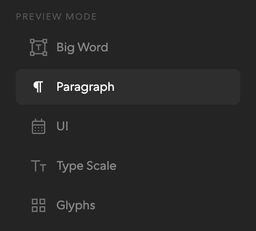
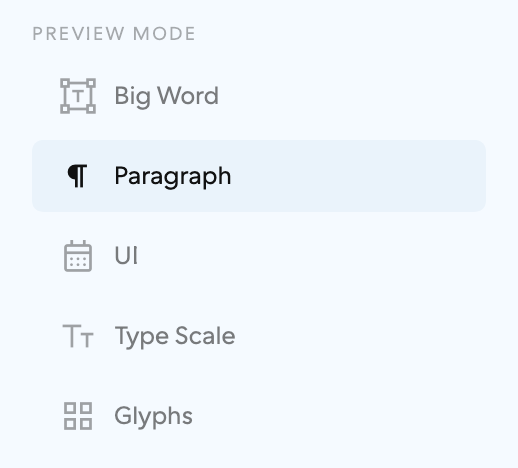

Two of the six graduated on 2026-10-08: the primary and the
secondary, in src/button-sets.css. They are not a pair — each has its
own place, and one panel never holds both. Beside .wm-btn rather than on top of
it, so nothing that ships today moves.
.wm-menu .wm-menu--row .wm-menu-listAn enclosure means chosen, not pressable. It is what font-proofer’s rail already does, and what that is, is a menu — preview modes of equal weight, picked between rather than read, which is the one place where a mark earns its space. A row has no edge at rest — a mark, a label, and the full width of the column as its target — and the ground arrives when it is the one that is on.
Already shipping · font-proofer, Preview Mode


This is the primary as font-proofer already draws it
(.mode-group of .mode-btn, .mode-btn-row where a
panel toggle trails). Adopting the primitive there is a rename, not a redraw.
Menu
States
Buttons
The primary is the giveaway: it spends its enclosure on chosen, so the one action that matters can only borrow the same ground. There is no louder left to go.
Editable
In situ
Screamer
And here is the family’s ceiling: chosen IS the loudest thing it owns.
What it costs. A resting row states nothing on its own — and the family survives that only on two conditions it cannot enforce for itself: every row carries a mark, and every row is the full width of its column. Strip either and this becomes the unformatted list. It also needs somewhere to be a menu: the row shape wants 200px and a left edge to sit against. And because the enclosure is spent on chosen, there is nothing left to spend on primary — a destructive action here looks like every other row.
And it does not do prose. The editable mark is drawn on the text,
so on a value it is four characters wide and on a wrapped sentence it is two full lines of
underline. .slider-number was written for a number in a rail and it is right
there.
every figure in this chapter, one theme
.wm-ruleThe type is the control. No box in any state. An action is
ink-full with a solid rule at 1px, thickening to the same two numbers the press
law uses — 1.2 under the pointer, 1.8 held. An editable is the identical rule,
dashed. Solid means it happens; dashed means it is yours. The condition is absolute:
nothing else in the document may be underlined.
Buttons
No icon-only form. There is nothing to draw it in. Those actions borrow the boxed button.
States
Editable
In situ
Menu
And this is where the family runs out. The rule scopes to the text, so in a row the leading mark, the label and the trailing mark are three objects at the same height with nothing holding them together — an underline cannot reach across a flex gap, and the row never becomes one thing. Which is why a list of rows is the primary’s, never this.
Screamer
No box at any size. The rule thickens with the type instead of staying 1px.
What it costs. Three things. The 44px floor is bought entirely with invisible padding, so two stacked actions are 88px of line box or they overlap. Two actions side by side read as one sentence unless something separates them. And the whole family depends on a document-wide prohibition that no component can enforce — the first underlined caption someone adds takes the affordance down with it.
Why these two, in the study’s own words.
06 for the menu, where an enclosure means chosen and the row does the pointing … Which one, Six ways to say press
The type is the control. No box in any state. … the condition is absolute: nothing else in the document may be underlined. 03 Rule, Six ways to say press
Why they never share a panel. The study paired the menu with the boxed button and named the rule the one to reject, and its worry about the pairing was one panel holding two meanings of a box at once. That objection is now the rule: a panel is a menu or it is a run of text, and it uses one set. An enclosure only ever means chosen, and a rule only ever means press, because nothing else is underlined.
All six, with every state and every cost: the primary is formerly 06 and the secondary formerly 03 in Six ways to say press.